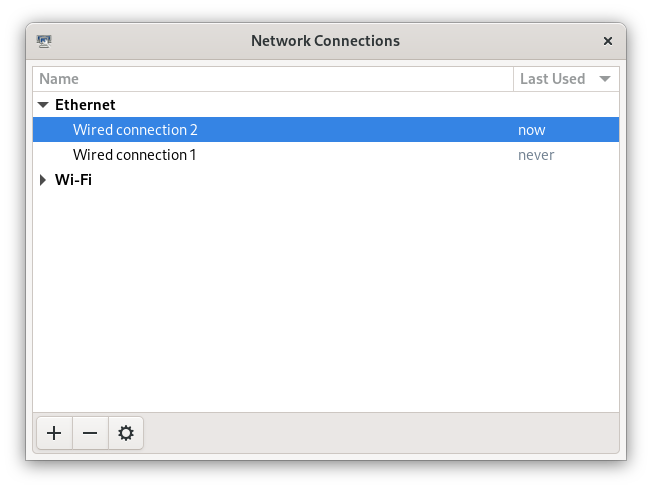
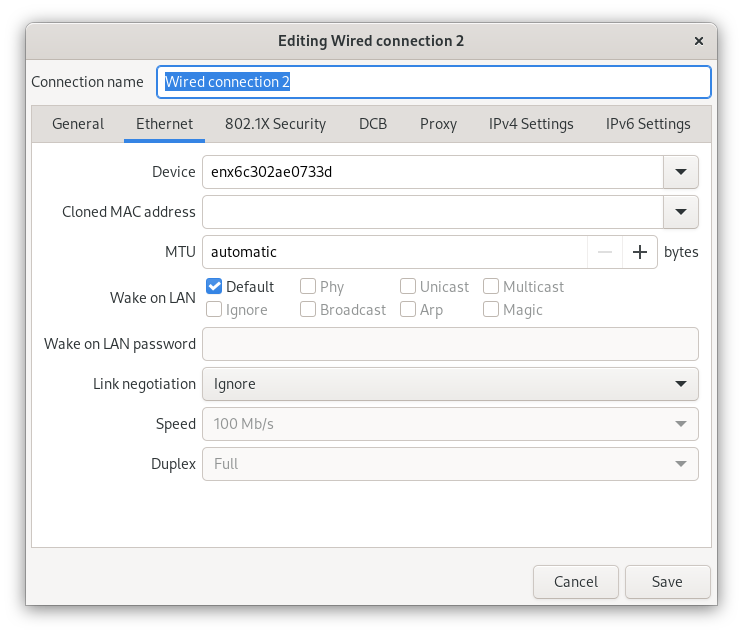
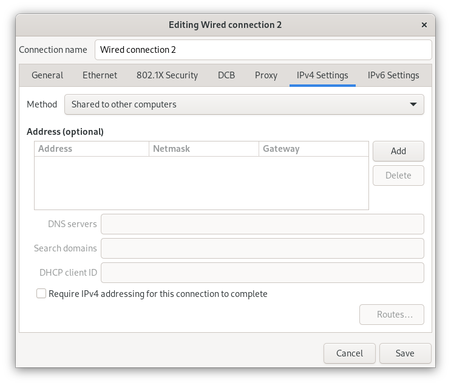
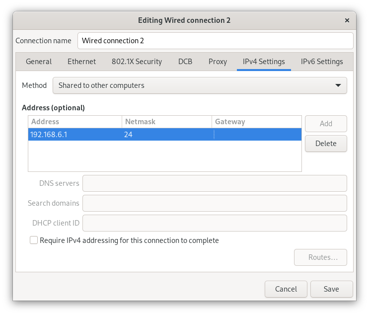

Setting up USB-Ethernet Network Connection between BeagleBone Boards and Desktop Linux
Table Of Contents
Introduction
In this post, I'll describe setting up internet-sharing between a typical desktop Linux install and a BeagleBone board, over USB. This will allow the boards such as the BeagleBone Black to access the outside world with just the provided USB cable and your PC. This will eliminate the need for an additional USB WiFi dongle or another Ethernet cable for the board.
Prerequisites
This guide assumes you're running a desktop Linux distribution, have physical working BeagleBone and also have basic familiarity with the Linux command line.
This guide should work on all typical Linux distributions, such as Debian, Ubuntu, Mint and Fedora.
For editing and creation of files, knowledge of a command-line text editor like nano of vi will be required. For those on something like Arch or Gentoo, I cover setting up the internet-connection using NetworkManager (managing internet connections), managing rules with iptables/nftables or their frontends ufw/firewalld. For those who use scripts to manage their interfaces, this guide will give you an idea of what you may need to configure to get networking on your bone.
For the board, make sure it powers up successfully. This guide assumes you have Debian Bullseye IoT booting successfully on BeagleBone. I interchange bone and board and BeagleBone throughout: they all refer to the BeagleBone board that you are using. The nano and vi editors come by default in the install. Use your favorite to create or edit files.
If you are new to the Linux command-line, read through this: https://ubuntu.com/tutorials/command-line-for-beginners.
A typical code block for commands running on the PC looks like this:
# this is a comment, don't type anything following '#' or the '#' itself
$ # this indicates that we are at the host PC's shell. Do not type this part when running a command
$ cmd # this is a command run on the host PC. Just type in the "cmd" part at the shell
this is output from the command
... # this indicates that some of the output was not included for brevity
this is more output from the command
root$ # this indicates the root shell on the host PC. This can be accessed with sudo -s or doas -s
I will seperate the commands run on the host and the bone into different command blocks. A command block for commands running on the bone will look like this:
bone$ # this is a command run on the board, bone$ indicates the bone's shell. Do not type this part when running a command
bone$ cmd # just type in the "cmd" part at the shell
woof woof # every command won't go woof woof :(
root-bone$ # this indicates the root shell on the bone. This can be accssed with sudo -s. I would have gone with bone-marrow for the pun, though less clear
I am running Fedora 38 and I am using a BeagleBone Black, kindly lent by Prashanth.
Let's get started!
Network Configuration on the PC
First we will note down the interfaces of the board. Once you boot your board (just power up your board using the provided USB cable using on of your PC's USB ports), 2 new network interfaces will show up. On my machine, they were enp0s20f0u2 and enp0s20f0u2i2, though they may be different under yours. Make sure to note down the interface names. The ip address will always be 192.168.7.1 and 192.168.6.1 for the respective interface. Here's a snippet of the interfaces on my machine:
$ ip addr
...
6: enp0s20f0u2: <BROADCAST,MULTICAST,UP,LOWER_UP> mtu 1500 qdisc fq_codel state UNKNOWN group default qlen 1000
link/ether 36:f5:23:52:6f:8f brd ff:ff:ff:ff:ff:ff
inet 192.168.7.1/24 brd 192.168.7.255 scope global noprefixroute enp0s20f0u2
valid_lft forever preferred_lft forever
inet6 fe80::aec8:22fe:dba4:2a35/64 scope link noprefixroute
valid_lft forever preferred_lft forever
7: enp0s20f0u2i2: <BROADCAST,MULTICAST,UP,LOWER_UP> mtu 1500 qdisc fq_codel state UP group default qlen 1000
link/ether 76:08:36:43:ab:9f brd ff:ff:ff:ff:ff:ff
inet 192.168.6.1/24 brd 192.168.6.255 scope global noprefixroute enp0s20f0u2i2
valid_lft forever preferred_lft forever
inet6 fe80::7243:7253:1184:11b6/64 scope link noprefixroute
valid_lft forever preferred_lft forever
Take a note of either of the interface names1 and the corresponding ip. Configuring one interface properly is enough for reliable internet-sharing, so I will be going with the interface enp0s210f0u2i2 that has the ip 192.168.6.1, unless otherwise stated.
Now plug in the board and wait for it to boot, and then go forward with one of the NetworkManager methods2. The firewall configuration has to be done if your internet connection from the board does not work (as described here: Testing the Connection). Here are quick-links for your firewall: ufw, firewalld, iptables, nftables.
Using a GUI (NetworkManager, nm-connection-editor)
NetworkManager is a software used to manage networks. We will use NetworkManager to set-up internet sharing between our PC and the bone. In this section, we will use nm-connection-editor, a GUI tool used for configuring networks for NetworkManager. Let's dive right in:
Note: I've done the filling steps with nm-connection-editor on a different machine running Debian, and the interface I've chosen there is enx6c302ae0733. It has an ip of 192.168.6.1.
Run nm-connection-editor, either from the command-line (heh) or by searching it in your application menu. You will be greeted with something like this: 
Double click on the interface that's most recently used. To check if it's from the bone, cross-reference the Device field with the interfaces you've noted down before (you have, haven't you?) 
Now go to the IPv4 section and change the Method field to the "Shared to other Computers" option in the drop down menu: 
Click the Add button and fill out the following details (use 192.168.7.1 if you are going with that ip address): 
Now click Save. You may additionally configure the other interface too, though that is not required. Now onto the BeagleBone!
Command-Line Method (NetworkManager, nmcli)
NetworkManager is a software to manage networks. In our case, we use it to share the internet of our PC with the bone. NetworkManager comes with a nifty command-line tool, nmcli. This section will describe how to use that to set up internet-sharing.
Let's list the network devices, with nmcli:
$ nmcli device
DEVICE TYPE STATE CONNECTION
enp0s20f0u2 ethernet connected Ethernet connection 3
enp0s20f0u2i2 ethernet connected Ethernet connection 2
...
If the STATE for the interfaces is "connected", run the following for your interfaces:
$ nmcli connection modify "Ethernet connection 2" ipv4.method shared
$ nmcli connection modify "Ethernet connection 2" ipv4.addresses 192.168.6.1/24
You may run the commands again for the other interface, just make sure to use the right connection names and change the ip from 192.168.6.1/24 to 192.168.7.1/24
If the STATE is "disconnected", like below,
$ ncmli device
DEVICE TYPE STATE CONNECTION
enp0s20f0u2 ethernet disconnected --
enp0s20f0u2i2 ethernet disconnected --
...
Run the following for the bone's interfaces to manually set everything up:
# I will setup one of the interfaces that have the disconnected state above:
$ nmcli connection add type ethernet ifname enp0s20f0u2i2 ipv4.method shared ipv4.addresses 192.168.6.1/24 con-name "Ethernet Connection 1" # make sure that con-name name is unique
A similar command is run for the other interface, just charge the ipv4.addresss to 192.168.7.1/24 and use a different connection name.
Make sure that the interfaces are from the bone and not from your PC's Ethernet port or some other device. A simple way to figure that out is to just disconnect the bone and see what interfaces are removed; or the converse: connect the board and note down what show up.
Now onto the BeagleBone!
Firewall Configuration (ufw)
ufw is a firewall that comes with many Linux distributions. It comes preinstalled on many Debian-based distributions such as Ubuntu and Mint. This section assumes you have run the network manager steps and sometimes required in addition to NetworkManager methods.
Note down the internet-facing interface on your PC. For me, it was wlp3s0.
$ sudo -s
root$ ufw route allow in on enp0s20f0u2i2 out on wlp3s0 # enp0s20f0u2i2 is the interface of the bone, and wlp3s0 is the internet-facing interface on my PC. To configure both interfaces, run the same command but with enps20f0u2 instead of enp0s20f0u2i2
root$ ufw default allow FORWARD
Now, open and add the following content to the top of /etc/ufw/before.rules:
# nat table rules
*nat
:POSTROUTING ACCEPT [0:0]
# Forward traffic
-A POSTROUTING -s 192.168.6.0/24 -o wlp3s0 -j MASQUERADE
COMMIT
I've put these in a code block so that it'll be easier to copy. Make sure it is at the top of the file. If you went with 192.168.7.1 as the IP, change 192.168.6.0/24 to 192.168.7.0/24.
Now reload the rules:
root$ ufw reload
root$ exit
To the BeagleBone!
Firewall Configuration (firewalld)
Firewalld is the firewall used typically on Fedora. Firewalld requires a way to manage connections, it won't do that on it's own. See this resource for more information. Assuming there is a way to manage the interface, we will continue to allow the interface through our firewall.
Let's create a new zone for the bone (rhymes). Put the following into /etc/firewalld/zones/bbb-zone.xml on your PC:
<?xml version="1.0" encoding="utf-8"?>
<zone target="ACCEPT">
<short>BeagleBone Zone</short>
<description>
This zone shall be used for your beagle bone, and other SBCs you want to connect to the internet.
Block all traffic to the local machine except ICMP, ICMPv6, DHCP
and DNS. Allow all forwarded traffic.
Based on the nm-shared zone.
</description>
<protocol value='icmp'/>
<protocol value='ipv6-icmp'/>
<service name="dhcp"/>
<service name="dns"/>
<service name="ssh"/>
</zone>
Now from a root shell:
root$ firewall-cmd --reload
# adding the choosen interface of the BeagleBone to the bbb-zone
root$ firewall-cmd --zone=bbb-zone --change-interface=enp0s20f0u2i2
root$ firewall-cmd --zone=bbb-zone --list-all # double check your work!
target: ACCEPT
icmp-block-inversion: no
interfaces: enp0s20f0u2 enp0s20f0u2i2 # I've added the other interface as well
sources:
services: dhcp dns ssh
ports:
protocols: icmp ipv6-icmp
forward: no
masquerade: no
forward-ports:
source-ports:
icmp-blocks:
rich rules:
To the BeagleBone!
Firewall Configuration (iptables)
Make sure you note down the name of the interface on your host that is facing the internet. Mine is wlp3s0, yours may be different.
$ sudo -s
# flush old rules from iptables
root$ iptables --flush
root$ iptables --table nat --flush
root$ iptables --delete-chain
root$ iptables --table nat --delete-chain
root$ iptables --table nat --append POSTROUTING --out-interface host-interface -j MASQUERADE # where host-interface is the interface on your host you'd like to use, e.g. wlp3s0
root$ iptables --append FORWARD --in-interface bbb-interface -j ACCEPT # bbb-interface is what the interface of beaglebone shows up when ifconfig or ip addr is run on the host mahcine. For me it was enp0s20f0u2i2 and enp0s20f0u2. Run these seperate times if you want to setup both for internet.
root$ echo 1 > /proc/sys/net/ipv4/ip_forward # turn on IP forwarding
root$ exit # exit root shell
To the BeagleBone!
Firewall Configuration (nftables)
Make sure you note down the name of the interface on your host that is facing the internet. Mine is wlp3s0, yours may be different.
Note that these were generated using iptables-translate.
$ sudo -s
root$ nft flush table ip filter
root$ nft flush table ip nat
root$ nft delete chain ip filter (null)
root$ nft delete chain ip nat (null)
root$ nft 'add rule ip nat POSTROUTING oifname "host-interface" counter masquerade' # where host-interface is the interface on your host you'd like to use, e.g. wlp3s0
root$ nft 'add rule ip filter FORWARD iifname "bbb-interface" counter accept' # bbb-interface is what the interface of beaglebone shows up when ifconfig or ip addr is run on the host mahcine. For me it was enp0s20f0u2i2
root$ exit
To the BeagleBone!
Onto the BeagleBone!
Alright, now boot power-up the bone by connecting the USB-mini to the board and the USB-A to your PC. After a few seconds, a few connections will show up, you can watch for them to appear with
$ watch -n1 ip addr
After they come up, we will use SSH to login into our board. Ensure you have a SSH client installed on your PC:
# run the command that corresponds to your distribution
$ sudo apt install openssh-client # Debian-derived distributions (Ubuntu, Mint, Q4OS, amount others)
$ sudo dnf install openssh-clients # Fedora
$ sudo pacman -S openssh # Arch
We can use either 192.168.6.2 or 192.168.7.2 to login over SSH, I will be using the former. Note that you won't see the password while typing it. It's recommended to change the password later to something more stronger.
$ ssh debian@192.168.6.2
Debian GNU/Linux 11
BeagleBoard.org Debian Bullseye IoT Image 2023-05-03
Support: https://bbb.io/debian
default username:password is [debian:temppwd]
...
After a successfully logging in, we will be operating in our board. The "bone\(" below would probably be something like debian@BeagleBone:~\) or similar.
bone$ cat /etc/dogtag
BeagleBoard.org Debian Bullseye IoT Image 2023-05-03
Testing the Connection
We will first setup our PC as the gateway:
bone$ sudo -s # the sudo password is temppwd by default
# you will be greeted by a message if this is your first time using sudo. Read it, understand it, and continue.
root-bone$ route add default gw 192.168.6.1 # 192.168.6.1 is the IP of the PC from the board. Replace with 192.168.7.1 if you're using that IP
root-bone$ ping -c 5 1.1.1.1
PING 1.1.1.1 (1.1.1.1) 56(84) bytes of data.
64 bytes from 1.1.1.1: icmp_seq=1 ttl=52 time=20.0 ms
64 bytes from 1.1.1.1: icmp_seq=2 ttl=52 time=37.1 ms
64 bytes from 1.1.1.1: icmp_seq=3 ttl=52 time=19.0 ms
64 bytes from 1.1.1.1: icmp_seq=4 ttl=52 time=21.7 ms
64 bytes from 1.1.1.1: icmp_seq=5 ttl=52 time=20.6 ms
--- 1.1.1.1 ping statistics ---
5 packets transmitted, 5 received, 0% packet loss, time 4007ms
rtt min/avg/max/mdev = 19.012/23.676/37.089/6.762 ms
Since we can reach the DNS resolver, let's try to see if we can reach a website:
root-bone$ echo "nameserver 1.1.1.1" >> /etc/resolv.conf
root-bone$ ping -c 5 deb.debian.org
PING debian.map.fastlydns.net (151.101.158.132) 56(84) bytes of data.
64 bytes from 151.101.158.132 (151.101.158.132): icmp_seq=1 ttl=52 time=20.0 ms
64 bytes from 151.101.158.132 (151.101.158.132): icmp_seq=2 ttl=52 time=20.4 ms
64 bytes from 151.101.158.132 (151.101.158.132): icmp_seq=3 ttl=52 time=19.9 ms
64 bytes from 151.101.158.132 (151.101.158.132): icmp_seq=4 ttl=52 time=21.1 ms
64 bytes from 151.101.158.132 (151.101.158.132): icmp_seq=5 ttl=52 time=20.1 ms
--- debian.map.fastlydns.net ping statistics ---
5 packets transmitted, 5 received, 0% packet loss, time 4002ms
rtt min/avg/max/mdev = 19.904/20.287/21.096/0.430 ms
If the ping command above fails with
root-bone$ ping -c 5 deb.debian.org
ping: deb.debian.org: Temporary failure in name resolution
that indicates that the firewall is probably blocking the traffic. To resolve this, see the section corresponding to the firewall you use here: ufw (Debian, Ubuntu, Mint), firewalld (Fedora), iptables, nftables.
Making it Persistent
This step is totally optional, but will save you time from having to type all those commands all the time.
There's two approaches to this, run a shell script after logging into the board, or setting it all up during boot.
Script
This script is based off of Derek Molloy's script here. Put it in a file under /usr/local/bin/StartUSBNetwork on your bone wit the following content.
#!/bin/sh
echo "Setting up the default gateway"
/sbin/route add default gw 192.168.6.1
echo "Updating the nameserver entry"
echo "nameserver 1.1.1.1" >> /etc/resolv.conf
Make sure to make it executable:
bone$ sudo chmod +x /usr/local/bin/StartUSBNetwork
bone$ sudo StartUSBNetwork
[sudo] password for debian:
Setting up the default gateway
Updating the nameserver entry
Now try pinging 1.1.1.1 and deb.debian.org!
A Configuration File in /etc/network/interfaces.d
Using a configuration file under /etc/network/interfaces.d we can setup a nameserver for our interfaces on boot.
bone$ ip addr
3: usb0: <BROADCAST,MULTICAST,UP,LOWER_UP> mtu 1500 qdisc pfifo_fast state UP group default qlen 1000
link/ether 24:76:25:89:20:83 brd ff:ff:ff:ff:ff:ff
inet 192.168.7.2/24 brd 192.168.7.255 scope global usb0
valid_lft forever preferred_lft forever
inet6 fe80::2676:25ff:fe89:2083/64 scope link
valid_lft forever preferred_lft forever
4: usb1: <BROADCAST,MULTICAST,UP,LOWER_UP> mtu 1500 qdisc pfifo_fast state UP group default qlen 1000
link/ether 24:76:25:89:20:85 brd ff:ff:ff:ff:ff:ff
inet 192.168.6.2/24 brd 192.168.6.255 scope global usb1
valid_lft forever preferred_lft forever
inet6 fe80::2676:25ff:fe89:2085/64 scope link
valid_lft forever preferred_lft forever
Since I've been using the 192.168.6.x ip, I'll show how to write a simple configuration file for the corresponding usb1 interface. A similar one can be created for usb0, but the ip addresses will have to be different (i.e the 192.168.6.x should be 192.168.7.x).
Create a file /etc/network/interfaces.d/usb1 with the following content on the bone3:
auto usb1
iface usb1 inet static
address 192.168.6.2
netmask 255.255.255.252
gateway 192.168.6.1
up /usr/bin/systemd-resolve --interface=usb1 --set-dns=1.1.1.1
Reboot,
bone$ sudo reboot
and try pinging 1.1.1.1 and deb.debian.org. Everything should work nicely!
Conclusion
I hope this post helped you setting up an internet connection with your board! If anything is not clear, don't hesitate to email me. See the following section for links to various resources and guides to clarify things more.
Until next time!
References and Further Reading
- https://wiki.archlinux.org/title/NetworkManager
- https://wiki.gentoo.org/wiki/Iptables
- https://wiki.gentoo.org/wiki/Nftables
- https://wiki.archlinux.org/title/Nftables
- https://wiki.nftables.org/wiki-nftables/index.php/Moving_from_iptables_to_nftables
- https://securitynetworkinglinux.wordpress.com/2019/07/03/how-to-masquerade-nat-ipv4-traffic-using-ufw-on-ubuntu-cli/
- https://fedoramagazine.org/internet-connection-sharing-networkmanager/
- https://developer-old.gnome.org/NetworkManager/stable/settings-ipv4.html
- https://firewalld.org/documentation/zone/
- http://derekmolloy.ie/beaglebone/
- https://unix.stackexchange.com/questions/128439/good-detailed-explanation-of-etc-network-interfaces-syntax
- https://serverfault.com/questions/89597/when-interface-receives-an-ip-address-run-a-shell-script
- https://wiki.debian.org/NetworkConfiguration#A.2Fetc.2Fnetwork.2Finterfaces
- https://unix.stackexchange.com/questions/128439/good-detailed-explanation-of-etc-network-interfaces-syntax
- https://github.com/rcn-ee/repos/tree/master/bb-usb-gadgets/suite/bookworm/debian
Footnotes:
In the official Debian images from BeagleBone, the bone's USB is configured this way: USB-RNDIS (for Windows compatibility) and USB-NCM gadget (for MacOS compatibility). Both USB gadgets are supported under Linux operating systems.
This is certainly not exhaustive list of all network managing software's or firewalls, but it has the most common ones that are usually preinstalled with your distro. If you have methods for your networking that you don't see here, feel free to shoot me an email at develruusaig dot gmail dot com!
There is a "dns-nameservers" option but that did not work for me, so I used systemd-resolv which is what manages /etc/resolv.conf.